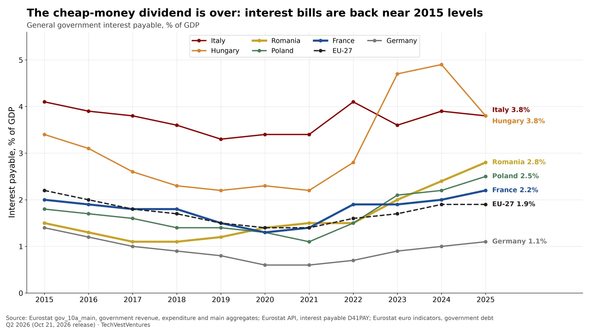

Q6. Interest Bite

General government interest payable as % of GDP, 2015-2025 (Eurostat gov_10a_main, Oct 2026 fiscal notification). The EU-27 bill fell from 2.2% in 2015 to 1.4% in 2021 as old debt was refinanced at near-zero rates, then rose back to 1.9% in 2025. Romania went from 1.1% (2017) to 2.8%, Poland from 1.1% (2021) to 2.5%, France from 1.3% (2020) to 2.2%, now above its 2015 level. Italy still pays the most among large economies (3.8%); Hungary peaked at 4.9% in 2024.
- Germany's interest bill nearly doubled from 0.6% (2021) to 1.1% of GDP, but remains the lowest of the large economies.
- Because most sovereign debt is fixed-rate, interest costs keep rising for years after yields jump, as each maturing bond is refinanced. The 2022-2025 rise is still working through.
Note: Interest payable is on an accrual (ESA 2010) basis, which differs from cash interest. Inflation-linked debt (large in Italy and France) adds to recorded interest when inflation is high.
Sources: Eurostat gov_10a_main, government revenue, expenditure and main aggregates Eurostat API, interest payable D41PAY Eurostat euro indicators, government debt Q2 2026 (Oct 21, 2026 release)